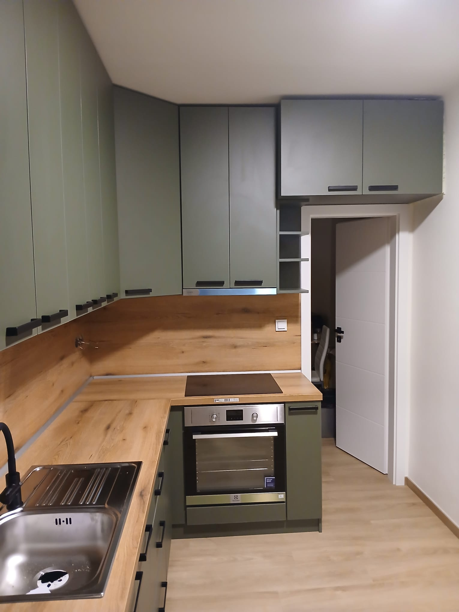
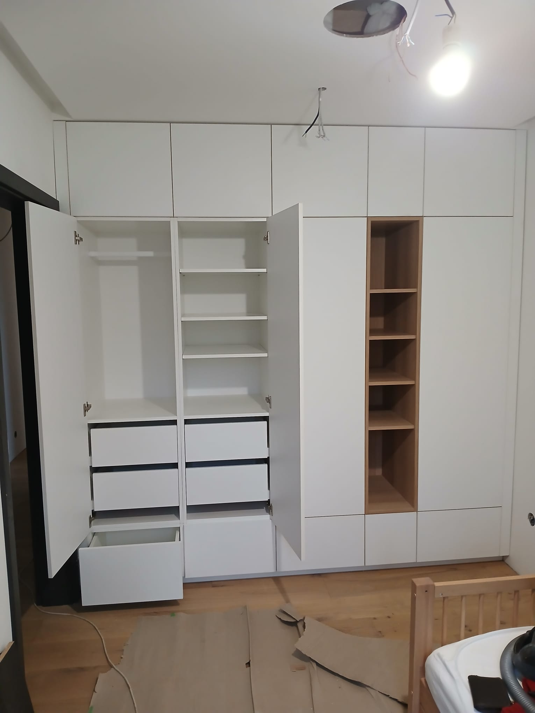
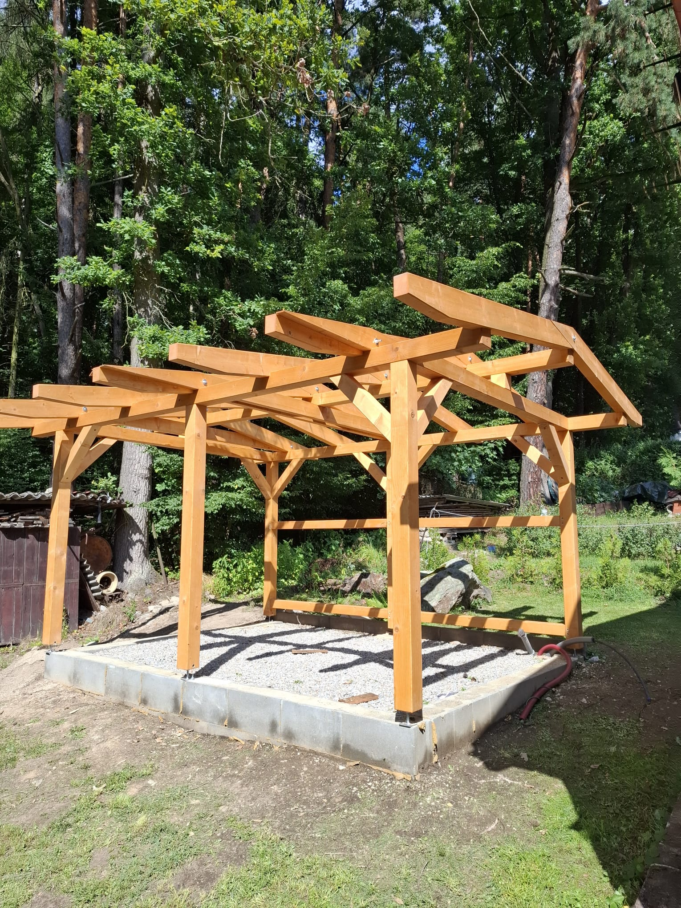

W
WEBYSS
ADMIN
Zobrazit web
Truhlářství Březnovský
· TEST
Co chcete upravit?
Vyberte oblast webu. K úpravám se dostanete jedním klepnutím.
Fotogalerie
Přidávat, řadit a mazat fotky realizací.
Upravit fotky



Služby
Nabídka a popisy
Úvod webu
Hlavní texty a fotka
O mně
Představení a texty
Kontakt
Telefon, e-mail, adresa